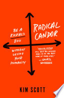

I first came across the author in a article describing the TED Talk she had given on the primary concept behind Radical Candor - that as a manager you need to both Care Personally and Challenge Directly. The article and talk resonated well with me but when the book came out I was worried that it really only had one great idea that would be repeated in different variations ad nauseum through the book. I was pleasantly suprised to found that the book had greater depth and a number of valuable lessons in it.
Model
Part 1: A New Management Philosophy
Chapter 1: Build Radically Candid Relationships
- Bosses guide a team to achieve results
- Manager’s three areas of responsibility:
- Guidance: Create a culture of guidance (praise and criticism) that will keep everyone moving in the right direction.
- Team-building: Understand what motivates each person on your team well enough to avoid burnout or boredon and keep the team cohesive.
- Results: Drive results collaboratively
- “It isn’t simply a matter of allowing your approach to your responsibilities to show that you care, however; you must also care deeply about people while being prepared to be hated in return.”
- ‘Radical Candor’ is what happens when you put ‘Care Personally’ and ‘Challenge Directly’ together
Chapter 2: Get, Give, and Encourage Guidance
- ‘Obnoxious aggression’ - when you challenge directly but don’t care personally
- ‘Manipulative insincerity’ - when you don’t challenge directly or care personally
- ‘Ruinous empathy’ - when you care personally but don’t challenge directly
- Radical candor: “Whisper: ‘Your fly is down!’”
- Obnoxious aggression: “Shout: ‘Look, his fly is down!’”
- Manipulative insincerity: Silent - worried about your feelings
- Ruinous empathy: Silent - worried about his feelings
Chapter 3: Understand What Motivates Each Person on Your Team
- Superstar
- Steep growth trajectory
- Change agent
- Ambitious at work
- Want new opportunities
- Rockstar
- Gradual growth trajectory
- Force for stability
- Ambitious outside of work
- Happy in the current role
- Your job as manager is not to provide purpose but instead to get to know each of your direct reports well enough to understand how each one derives meaning from work
- Excellent Performance: Keep your top performers top of mind
- Excellent Performance / Gradual growth trajectory: Recognize, reward but don’t promote
- Excellent Performance / Steep growth trajectory: Keep superstars challenged (and figure out who’ll replace them when they move on)
- Managing the middle: Raise the bar - there’s no such thing as a B-player
- Poor Performance / Negative growth trajectory: Part ways
- Questions to consider before letting someone go:
- Have you given Radically Candid guidance?
- How is this person’s poor performance affecting the rest of the team?
- Have you sought out a second opinion, spoken to someone whom you truyst and with whom you can talk the problem through?
- Common lies managers tell themselves to avoid firing someone who needs to be fired:
- It will get better
- Somebody is better than nobody
- A transfer is the answer
- It’s bad for morale
- Low performance / Steep growth trajectory: Manager, look yourself in the mirror!
- Wrong role
- New to role; too much too fast
- Personal problems
- Poor fit
- No permanent markers: people change and you have to change with them
Have you ever underestimated an employee’s contributions because they weren’t gunning for a promotion? What happened? Did you regret it? Have you ever clipped the wings of an employee on a steep growth trajectory? What happened? Did you regret it? Are you more at risk of being an absentee manager or a micromanager? What kinds of situations push you towards one of these modes? Are you currently on a gradual or steep growth trajectory? Were you ever on the opposite one?
Chapter 4: Drive Results Collaboratively
Have you ever tried to tell a team of people what to do? What were the results? Which step(s) of the Get Stuff Done (GSD) Wheel are easiest or most comfortable for you? What steps do you tend to skip? Where do you get stuck? What are some of the practices your team or organization has today that fall into the different steps of the GSD wheel? Are you a quiet listener or a loud listener? Do you want to foster a culture of debate on a team? If so, how will you do it? If not, why not? How do you help your team make decisions? Are you worried you grab too many decisions?
Part 2: Tools & Techniques
Chapter 5: Relationships
What activities do you do to stay centered? Describe an experience when you weren’t able to bring your best self to work. What happened? How do you build trust with your direct reports/ staff? What strategies or activities have been most effective, and how can you tell?
Chapter 6: Guidance
Have you solicited feedback from your direct reports/staff? If so, how have you done it, and has it been successful? Do you have a go-to question for soliciting feedback? What is it? What are some of the ways that you have rewarded criticism? Which of the book’s tips for giving guidance did you find most helpful? What’s something you could do tomorrow with someone on your team to offer Radical Candor?
Chapter 7: Team
Do you or can you begin facilitating “Career Conversations” with your direct reports, as a way of caring personally and helping them map out their career trajectories? Do you know the balance of rock stars and superstars on your team? How do you think about growth for different people? Did any of the book’s suggestions for hiring and firing resonate as applicable to your team/company?
Chapter 8: Results
How do you approach 1:1 meetings? How’s that different than the recommendations laid out in the book? Will you change your 1:1’s? How do you help nurture new ideas? Are there ideas from the book that you’ll adopt? Do you hold staff meetings? How do they compare to the approach in the book? Any recommendations that you’ll incorporate? Do you think the Big Debate or Big Decision meetings described in the book would help your team? What do you think about the number of meetings suggested in this chapter? How do you prevent meeting-creep from taking over the time your team should be spending executing?